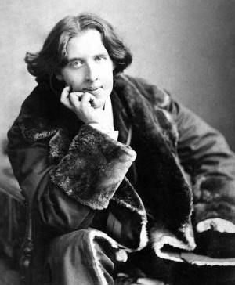

.Oscar Wilde ( 1854-1900)
Oscar Fingal O’flahertie Wills, với biệt danh là Oscar Wilde, là nhà văn Ailen nổi tiếng cả về sự nghiệp văn chương lẫn đời tư, ông đã qua đời sớm trong cảnh cô đơn, cùng quẫn. Một thế kỷ sau, người ta vẫn còn nói tới ông.
Nhà hát St.James tối 20/2/1892 đông nghẹt người: Vở kịch Cái quạt của Windermere phu nhân đã thu hút tất cả dân Luân Đôn. Khi màn buông xuống, tiếng vỗ tay hoan hô rung chuyển cả rạp. Người ta yêu cầu tác giả: tục lệ muốn ông ra cảm ơn các diễn viên và công chúng. Oscar Wilde ( 1854-1900) từ hậu đài bước ra. Trong bàn tay đeo găng, ông vẫn còn cầm một điếu xì gà. Hút một hơi và ông tuyên bố: “Thưa quý bà, quý ông, có lẽ thật không đúng đắn khi hút thuốc trước mặt quý vị, nhưng cũng rất không thích đáng chút nào khi tôi bị quấy rầy trong lúc đang hút thuốc” còn cả gan hơn, nghệ sĩ nói thêm: “Tôi ngợi khen các bạn về thành công lớn của buổi biểu diễn này, đã làm cho tôi tin chắc rằng các bạn đã nghĩ tốt về vở kịch của tôi hơn chính bản thân tôi”.
Trong suốt chặng đầu đời của ông, Oscar Wilde đã duy trì thói kiêu kỳ, cao ngạo và dáng vẻ sỗ sàng đó. Theo ông, sự khiêm tốn là đặc hữu của những kẻ tầm thường. Buổi công diễn của Cái quạt của Windermere phu nhân đã làm cho ông trở thành nghệ sĩ được yêu thích nhất nhưng cũng là tự cao tự đại nhất ở Luân Đôn.
Một con người hãnh tiến, thiên tài nhưng khó chịu
Thói tìm cách ngoi lên vô độ đã được gán cho một bà mẹ ngông cuồng và thích chi phối mọi người, một người cha là thầy thuốc khoa mắt nổi tiếng về khả năng nghề nghiệp cũng như đam mê ngoại tình. Trong tuổi thơ ở Ailen đó, tất cả đã đưa Oscar Wilde tới bên bờ vực thẳm: cái chết của Isola, cô em gái nhỏ mà anh rất yêu mến, người có lẽ đã được anh đồng nhất hóa với sự phẫn nộ chống lại trật tự khắc khổ và sự phóng túng trong gia đình. Sớm ngạo mạn, Oscar lại tỏ ra phù phiếm và lười biếng. Chỉ có mỗi ám ảnh giày vò anh: Nhu cầu và quyến rũ. Một ham muốn vô bờ bến: Anh làm cho các bạn bè say mê, dụ dỗ các thầy giáo, làm cho giới sân khấu phải chú ý tới. Không chỉ vì anh có một thể chất đặc biệt có lợi: một khuôn mặt phẳng phiu, một tấm thân cường tráng. Mà như Mac Orlan đã viết: “Đó còn là một tính nhạy cảm khác thường, một vẻ người béo phì, hoạt động về đêm, mang biểu hiện thi tứ”.
Ở tuổi 28, vừa tốt nghiệp đại học Oxford ra, Oscar đặt chân tới nước Mỹ. Bên bờ Đại Tây Dương này, các nhà báo hau háu chờ đợi chàng công tử bột vốn đã có một tiếng tăm ầm ĩ, người truyền bá nghệ thuật vị nghệ thuật và không một rào cản đạo đức nào có thể ngăn chặn được. Các phóng viên táo bạo đã thuê một xuồng máy để đón con người mới của văn học nước Anh. Họ tưởng tượng Oscar mảnh khảnh như một thiếu nữ và hói đầu như một triết gia. Và họ phát hiện ra một kiểu người Eskimo to lớn nhưng xanh xao. Trước câu hỏi thường lệ của hải quan: “Ông có gì khai báo không?”, chàng Mohican đáp lại: “Chỉ có thiên tài của tôi”.
Oscar đã nâng tính phù phiếm lên hàng nghệ thuật
Từ những buổi nói chuyện đến những buổi dạ tiệc, vốn là người khéo nói chuyện, Oscar đã làm cho mọi người sững sờ, nổi giận, nhưng cũng quyến rũ xã hội thượng lưu Mỹ bởi những lời ba hoa của một nhà thơ đương thời và dáng vẻ của người chăn cừu mặc quần nịt ngắn.
Mang ánh hào quang của một thanh danh mới, Oscar trở về tấn công sân khấu Anh. Giới giàu sang tán thưởng những bài thơ của Oscar. Ông trở thành thư ký cho người tình của hoàng tử Xứ Gan, đi dạo trên đại lộ Piccadilly với cả một đám thanh niên mang ấn tượng bởi vẻ hoạt bát của con người dám tấn công vào thiết chế văn chương.
Làm đẹp cái vẻ ngoài để làm giàu nội tâm: Đó là tín điều của Oscar. Cây phượng vĩ này tôn tính phù phiếm lên hàng nghệ thuật: “Nhiệm vụ đầu tiên là chấp nhận một bộ điệu. Còn vế thứ hai, vẫn chưa ai khám phá được”. Baudelaire ca ngợi những thú vui giả tạo, còn Wilde lại ca tụng ham muốn yêu đương: “Sự khác biệt duy nhất giữa một tùy hứng với một tình yêu muôn thuở, chính là tùy hứng kéo dài lâu hơn”. Đứng đầu một phong trào có tên là “Thập kỷ bệnh hoạn”, ông bênh vực cho một cuộc sống vứt bỏ tất cả mọi đa cảm, mọi đạo đức. Ông đã có câu nói nổi tiếng: “Tôi có thể cưỡng lại tất cả, trừ sự cám dỗ”. Nó sẽ làm cho ông sa đọa.
Hốt hoảng và vui thích, xã hội Luân Đôn mở cửa các phòng khách tiếp đón con người kỳ quặc đó. Wilde trở thành người được ưa chuộng trong các tối dạ hội do các nhân vật nổi tiếng thời đó tổ chức. Theo đà của Salomé, vở kịch mà ông viết và cùng dàn dựng với Sarah Bernhardt, ông cho ra Chân dung của Dorian Gray. Thành công đến ngay tức khắc, Dorian Graychính là Oscar Wilde mơ ước mãi mãi thanh xuân, trong khi bức chân dung của ông lại xấu đi bởi tất cả những tội lỗi dâm ô mà Dorian Gray phạm phải. Khiếp đảm bởi sự phản chiếu thảm hại của tâm hồn, Dorian Gray đập vỡ bức chân dung của mình và tự tử. Oscar Wilde chính là con người đó, đã coi trọng ảo ảnh của nghệ thuật hơn của cuộc đời.
Dù sao cũng vẫn cuốn truyện đó đã cho phép ta đoán trước hình phạt ghê gớm mà Oscar Wilde phải tự chịu: Say mê huân tước Alfred Douglas, một chàng trai tóc vàng xinh đẹp, con trai thứ ba của hầu tước Queensberry, ông đã vướng vào một vụ án về thuần phong mỹ tục dẫn tới sự lụn bại. Vụ án đó đã là tiếng chuông báo tử cho một cuộc đời chia sẻ giữa những nữ diễn viên đẹp và những kẻ phóng đãng xấu xa đã phung phí tiền bạc của ông. Bị thừa nhận là mang tội có những hành động khiếm nhã thô bạo, Oscar bị kết án hai năm tù khổ sai.
Bệnh tật, sa sút và cô đơn
Sự hỗn tạp ở một trong những nhà tù khủng khiếp nhất của nước Anh ở cuối thế kỷ XIX đã mãi mãi làm ông kiệt quệ.
Ngày 30/11/1900, Oscar Wilde qua đời tại khách sạn Alsace ở Paris. Ông kết thúc cuộc đời ở tuổi 46, trong cảnh cô đơn, sa sút và bệnh hoạn. Ông không biết rằng một thế kỷ sau, người ta vẫn tìm đọc Chân dung của Dorian Gray, tác phẩm phản chiếu truyền thuyết về tuổi thanh xuân vĩnh cửu mà ông đã ấp ủ trong suốt cuộc đời và đã làm cho ông trở thành bất tử.
HOÀNG HƯNG